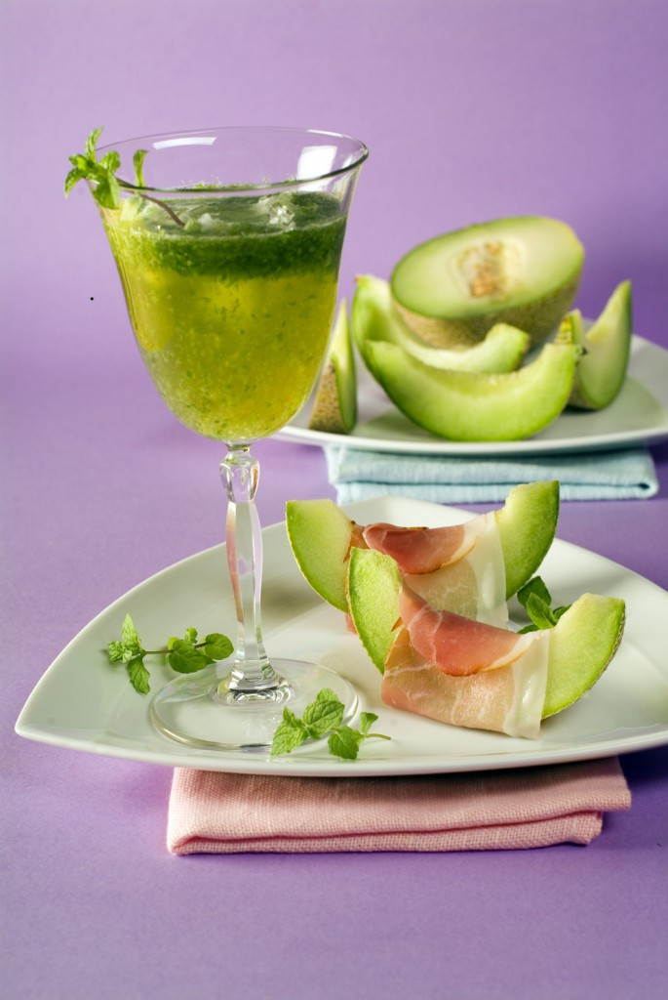

Sirop de menta

- Se face un ceai concentrat de mentă, care se fierbe circa 20 de minute. Se lasă 24 de ore la loc rece, apoi se strecoară printr-un tifon dublu, storcându-se bine frunzele de mentă.
- Se măsoară lichidul obţinut şi se pune o cantitate egală de zahăr. Se fierbe până se leagă (se face testul cu picăturile care se desprind de pe latul lingurei, ca la jeleu). Spre sfârşit, se poate adăuga şi zeama de la o lămâie.
- Se toarnă fierbinte în sticle (sub care au fost puse cuţite, ca să nu crape) şi se depozitează într-un loc răcoros. Se foloseşte diluat cu apă minerală sau sifon ori în combinaţie cu alte siropuri de fructe (pepene galben, de exemplu).